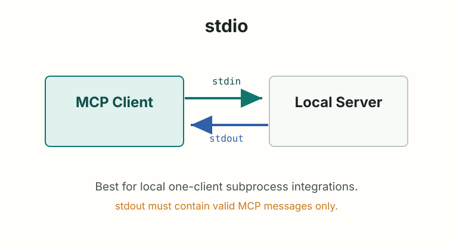
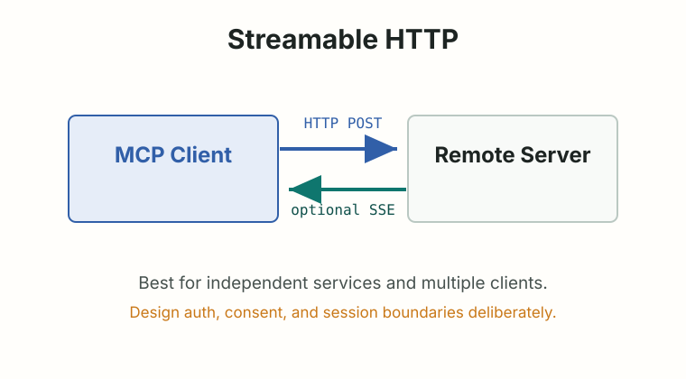

MCP Fundamentals
传输、生命周期与调试
理解 initialize、capability negotiation、stdio、Streamable HTTP 和日志边界。
两种标准传输：stdio 与 Streamable HTTP
截至官方 2025-11-25 specification，MCP 标准传输包括 stdio 和 Streamable HTTP；JSON-RPC 消息必须 UTF-8 编码，见 Transports。

stdio
Streamable HTTPstdio：本地进程集成的默认直觉
stdio 的核心约束很硬：
- client 启动 MCP server 作为子进程。
- server 从
stdin读 JSON-RPC。 - server 向
stdout写 JSON-RPC。 - 消息由换行分隔，不能包含嵌入换行。
- server 可以向
stderr写 UTF-8 日志。 - server 不得向
stdout写非 MCP 消息。
这也是很多初学者调试失败的原因：在 Python 里随手 print("debug")，如果写到 stdout，就会污染 JSON-RPC 通道。官方 build server guide 也提醒，stdio server 不要把日志写到 stdout，见 Build an MCP server。
stdio server 里调试日志应该写到 stdout 还是 stderr？
stderr。stdout 必须保持为有效 MCP 消息通道。
生命周期不是礼节，是状态边界
MCP lifecycle 定义了 initialization、operation、shutdown 三个阶段。初始化必须是 client 和 server 的第一轮交互，用来协商协议版本、能力和实现信息，见 Lifecycle。
- Initialization
client 发送
initialize，声明 protocolVersion、capabilities 和 clientInfo。 - Capability negotiation
server 返回 protocolVersion、capabilities 和 serverInfo。
- Initialized notification
client 发送
notifications/initialized，表示可以进入正常通信。 - Operation
client/server 使用已协商能力进行 list、read、call、notify 等操作。
- Shutdown
连接结束，stdio 通常由关闭流和子进程退出完成。
一个工具调用的最小路径
{
"jsonrpc": "2.0",
"id": 2,
"method": "tools/list"
}client 先发现工具，再调用工具：
{
"jsonrpc": "2.0",
"id": 3,
"method": "tools/call",
"params": {
"name": "campus_schedule_get_day",
"arguments": {
"date": "2026-06-25"
}
}
}- initialize
- notifications/initialized
- tools/list
- model chooses tool
- tools/call
- host shows result to model/user
传输选择是产品判断
一个只给本机 IDE 用的文件搜索 MCP server，第一版应该选 stdio 还是 Streamable HTTP？
- A. stdio
- B. Streamable HTTP
- C. 两个都做
视角
依据：基于官方 transport 文档对 stdio 和 Streamable HTTP 的边界；真实项目仍要看部署、认证和多客户端需求。
A 是更稳的第一版选择。它减少网络和认证复杂度，适合 host 启动本地 server 子进程。等出现远程访问、多客户端、独立部署或统一认证需求，再考虑 Streamable HTTP。